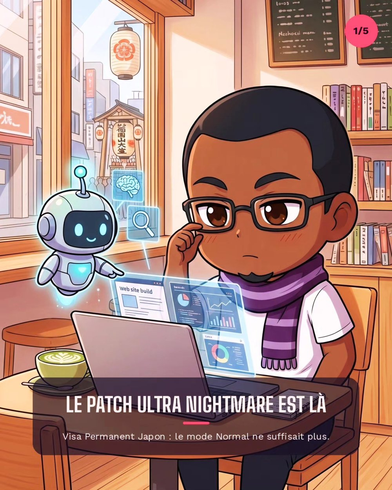

JaponVisa Permanent au Japon : le patch "Ultra Nightmare" est de sortie
Le Visa Permanent (Eijūken) passe en mode Ultra Nightmare : revenu record, tolérance zéro sur 7 ans, mariage sous contrôle et gacha du visa. Pilou décortique le nouveau patch, entre ironie et coup de gueule.
12 août 2026
3 min de lecture